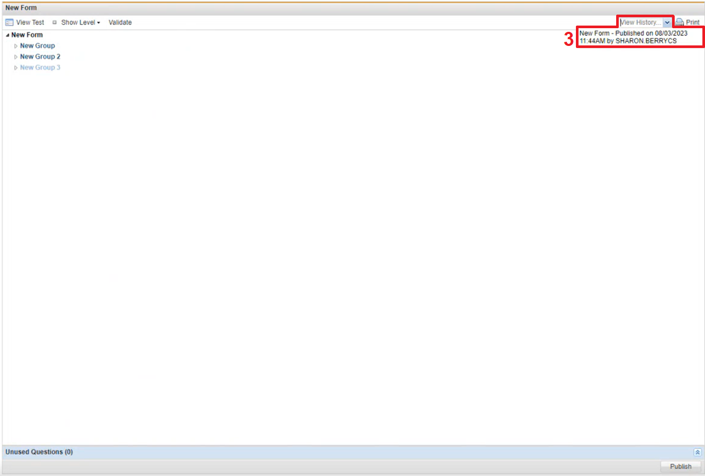
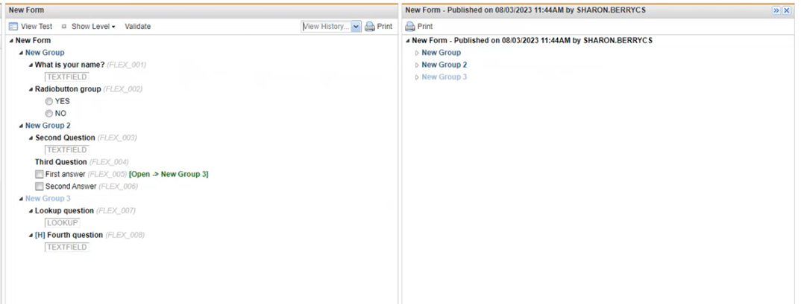

wrench in front of a form. The form window displays to the right.
wrench in front of a form. The form window displays to the right.
The history of a form can only be viewed once the form has been published (See Publishing a Charting Form).
To View the History of a Form
wrench in front of a form. The form window displays to the right. 
To view changes made after the initial publishing of the form

If users prefer the old charting form over the new one created, the user will have to rebuild the charting form, there is no way to revert to the old charting form.